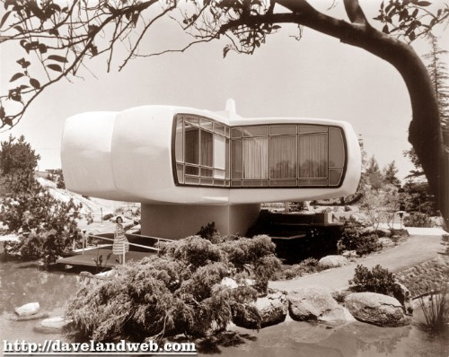
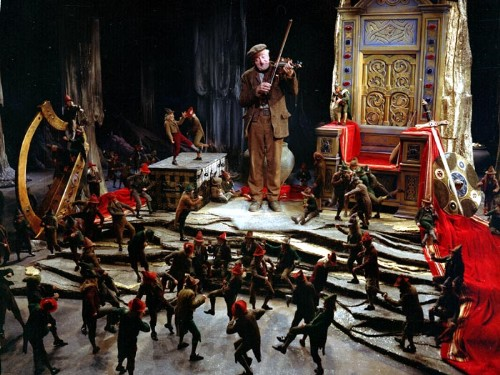

27th
March
2007
The great Disney blog 2719 Hyperion has a wonderful post about one of my favorite overlooked Disney characters J. Audubon Woodlore, the park ranger. I fell in love with him as a kid when I saw the classic “In The Bag”, where he makes up a little song and dance to convince the bears to clean up the park. Apparently In The Bag was such a hit that it inspired a record called the “Humphrey Hop.”
The short is available on a Disney DVD called Disney Rarities. Check out 2719 Hyperion’s overview of this great oft-forgotten Disney character.
UPDATE: I need to remember to search Youtube before making any post. In The Bag is on Youtube right now. I’m not sure how long it will be on there, but for now, enjoy!
posted in Animation, Art, Disney |
21st
March
2007
Okay JYC readers, are you awake? I’m going to post these nifty icons, and then you tell us what they are. Not just where they’re from, but let us know what each icon actually represents. After they’ve all been guessed (or if too much time passes by) I’ll post more about this fantastic set. Post your guesses in the comments.
posted in Art, Design, Disney |
14th
March
2007
When I lived in Seattle, each trip to Disneyland was preceded by an evening spent getting into town and checking in at the hotel. Disneyland had to wait until the morning, but that wasy okay… it was thrilling just to be near Disneyland, even the warm night air was otherworldly to me. Everyone has their own Disneyland routines & rituals, and mine started that night before, in a far corner of the Disneyland Hotel. That’s where, twice a night, they ran the Fantasy Waters show:
It was the perfect thing to feed my building excitement for the next day. It’s gone now. I’m sad it’s not there anymore, but now that I live in California my Disneyland rituals have changed, and I probably wouldn’t make it over to see it very often anyhow. I have about a hundred photos of the show, which is pretty silly — the show isn’t much to look at in static form. Hanford found this for me the other day, and I was thrilled to get to watch the show again. This is the “new” version that was rolled out in the ’90s, so it’s a little sad, but it’s still the Fantasy Waters show. Keep your ears perked for a rare bit of Captain EO. [uploaded by ru42]
posted in Disney |
13th
March
2007
The Monsanto House of the Future was part of Disneyland’s Tomorrowland from 1957 until 1967, and was a showcase of what plastics could do. The house was made of eight pre-fabricated plastic pieces; the building was so strong that when the time came for it to be demolished, the wrecking ball bounced right off.

Disneyland’s Monsanto House of the Future, from
Daveland
The House of the Future under construction
The Daveland blog has some great pictures from the Goody Clancy architecture firm of the house as it was being constructed. I love the above picture of the completed home — largely because it captures the pastoral feel of the landscaping, which is in such sharp contrast to the modern-as-modern-can-be home. I also love this picture to the left — this time, it’s the contrast of the traditional Sleeping Beauty’s castle in the background against the upstart little plastic building.
The Daveland blog has more pictures, be sure to check them out: Part 1 and Part 2 [via Stuff from the Park]
posted in Design, Disney, Midcentury, Space Age |
10th
March
2007
The wonderful Disney Blog 2719 Hyperion has a great piece on the Man In Space episode of Walt Disney’s Wonderful World Of Color, (the episode turned 52 just a few days ago). The episode is a peek into what the 1950s envisioned the future of space travel to be like. It features both live action lectures by Disney animator Ward Kimball and rocket scientist Wernher von Braun, as well as some animated futurist visuals that are not to be missed. 2719 Hyperion does a better job than I do at really coveying the impact of this midcentury science film:
Perhaps the most interesting footnote about Man in Space is the largely unnoticed impact it had on the development of the U.S. space program. President Eisenhower was so impressed with the program, he requested a print of the film to screen for high-ranking Pentagon officials, which was evidently instrumental in kick starting the country’s space initiatives.
Check out 2719 Hyperion’s post on Man In Space. If you’re nuts about it like I am, be sure to pick up the Tomorrowland DVD, which contains Man In Space along with a few other not-to-be-missed Space Age edutainment shorts from Disney’s timeless TV show.
posted in Animation, Disney, Midcentury, Science!, Space Age, Television |
9th
March
2007
Saint Patrick’s Day is coming up — that means it’s nearly time for one of my very favorite movies: Darby O’Gill and the Little People. Darby O’Gill is a live-action Disney film from 1959. It doesn’t get as much attention as I think it should.

Darby O’Gill fiddles a tune for the Leprechauns, ©Disney
Reasons you should watch the Darby O’Gill and the Little People DVD:
Read the rest of this entry »
posted in Disney, Midcentury |